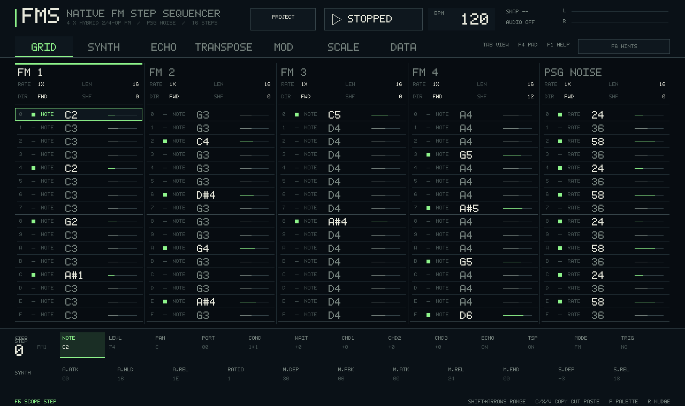

Chord fields
Choose CHD1, CHD2, or
CHD3 on an FM step and enter semitone offsets
relative to NOTE. A value of +7 adds a
fifth; zero leaves that chord slot unused.
Five tracks. Per-step sound design.
A practical manual for turning the native Linux version of FMS into patterns, patches, variations, and live changes. The core idea is simple: every step owns its own sound.

01 / First signal
Build FMS Linux with SDL2, launch it, then press Space. The starter pattern is already voiced, so the shortest path to learning is to alter something that is playing.
sudo apt install build-essential pkg-config libsdl2-dev
make
./fms-linux
On Fedora, install
gcc-c++ make pkgconf-pkg-config SDL2-devel instead.
The program opens as a native SDL desktop application; it does
not need a ROM or emulator.
02 / Grid view
This miniature grid follows the same editing grammar as the app. Click a cell, or give the lab focus and use its listed keys. It is a documentation playground, not connected to a saved project.
WAIT field shifts a trigger by microticks.
Negative offsets are constrained at queued pattern boundaries
so a fresh pattern does not arrive early.
03 / Practice console
The Grid Lab above is the fast editing surface. This console covers the rest of the instrument: advanced FM, Echo, Transpose, Mod, Scale, Data, Palette, Snapshot, and the project actions. Its state is local to this page, so it is safe to experiment freely.
Preparing the selected view.
Slots copy sound design only; the grid event keeps its note, trigger, level, pan, and timing.
04 / Voice behavior
The four FM tracks share a finite FM voice pool. A step can ask for up to three chord offsets in addition to its root; a tonal arrangement stays clear when you decide which tracks deserve the available voices.
Choose CHD1, CHD2, or
CHD3 on an FM step and enter semitone offsets
relative to NOTE. A value of +7 adds a
fifth; zero leaves that chord slot unused.
Use T to toggle a trigless step. It updates target values without restarting oscillator phase or envelopes, which makes it useful for stepped pitch bends, level movement, and evolving modulation.
COND determines whether an event fires every nth
count. Combine condition, microtime, and independent track
length to make movement that does not reset with the main loop.
05 / Synthesis
FM steps begin with the original compact two-operator engine. Advanced FM is an opt-in, per-step engine, so it expands sound design without changing the rendering path of legacy sounds.
Parallel mode mixes the two FM operators instead of phase-modulating one with the other. Use it for detuned pairs, two-note intervals, and direct additive colors.
Open SYNTH with Tab and use Page Up/Page Down to audition neighboring steps without losing the focused field. Advanced fields work with range, track, all-track, palette, pattern, snapshot, and preview workflows.
06 / Seven places to work
Tab and Shift + Tab cycle Grid, Synth, Echo, Transpose, Mod, Scale, and Data. Each view stays tied to the active track and selected step, so sound design and sequencing remain close together.
The main pattern surface. Place triggers and edit step values, legacy patch values, track length, rate, shuffle, direction, mute, solo, and scope.
Use this for programming and fast changes while transport runs.
The detailed advanced FM editor. Navigate the complete field list for the selected FM step, including operators, routing, envelopes, filter, drive, unison, and modulation slots.
Use this when a step needs a deliberately designed timbre rather than a quick legacy adjustment.
Algorithmic repeats per track. Set repeat count, spacing, transpose, volume/modulation/feedback attenuation, and echo pan behavior.
The ECHO step parameter decides whether an event
sends into this track effect.
An eight-step pitch lane. Adjust transposition values, lane length, rate, and whether it advances by pattern, step, or trigger.
The TSP step parameter controls whether a
particular event receives the lane.
A step-sampled modulator. Route each track's modulation source to a target track and destination, then choose speed, shape, depth, and start offset.
It behaves like an LFO sampled at events, so polymetric clocks can create useful phase drift.
Pitch entry and playback quantization. Choose a root and a twelve-note mask. Entered and played notes follow the current scale.
Store a scale in a bank when a recall needs to change musical context with a pattern.
Patterns, banks, and live loading. Select a slot or whole column, save, load in place, load and reset, cue, clear, randomize, rename, lock, and manage stored BPM/scale.
Use this as the performance memory and safety surface.
07 / Performance
The strongest live workflow is not frantic editing. It is a small collection of variations, a snapshot for safe experiments, and queued patterns that land on a musical boundary.
Press P to open the appropriate FM or noise palette.
Enter recalls a sound, Shift +
Enter stores it, and Ctrl +
Enter applies it across the track. Slots
0 through D persist per engine.
Press S to capture or recall a performance snapshot. Take one before an energetic edit, then flip between the stored state and the live state without loading a new pattern.
In Data, Q queues the selected slot or column. Single-track cues land at that track's next nominal loop boundary; whole columns land atomically at the next global 16-step boundary.
08 / State and files
FMS Linux keeps project state in a versioned, checksummed, atomically replaced file. A partial write cannot overwrite the last good session.
$XDG_DATA_HOME/fms-linux/state.bin
~/.local/share/fms-linux/state.bin when XDG_DATA_HOME is unset
Use --save-path FILE to open a separate working
state. This is useful for a set, an experiment, or a clean
tutorial session. The header PROJECT menu
exposes Start New, Clear Working Tracks, and Save Now; New and
Clear require a confirmation step.
make test
make screenshot
make audio-smoke
./fms-linux --help
make screenshot verifies the UI through SDL's dummy
driver. make audio-smoke exercises the real-time
engine with SDL's dummy audio driver.
09 / Control reference
Filter by the action you want. F6 opens a non-modal side panel that changes its hints for the active view or overlay; F1 or ? opens the full control reference without leaving FMS Linux.